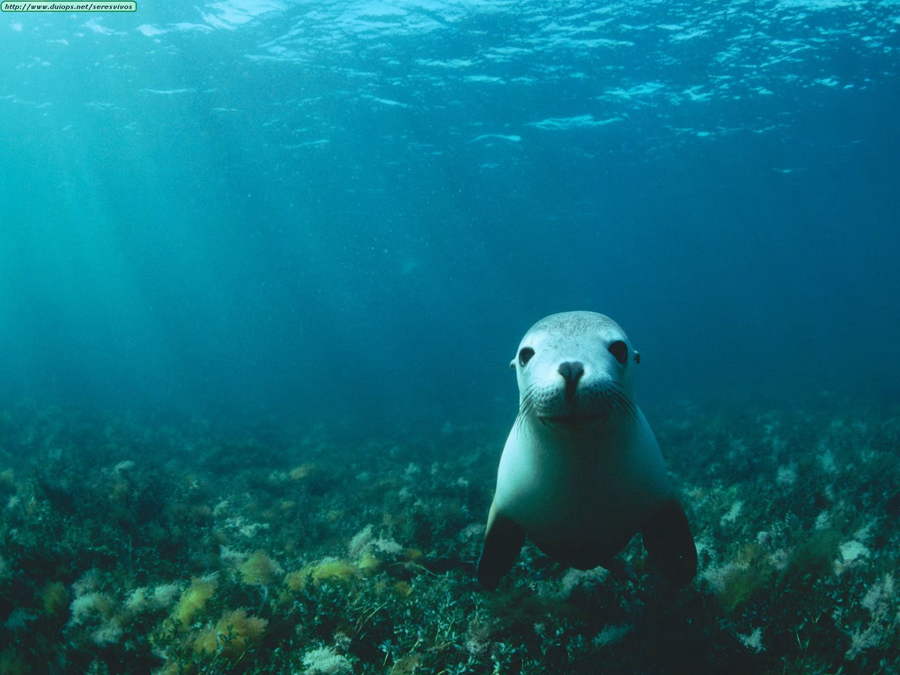
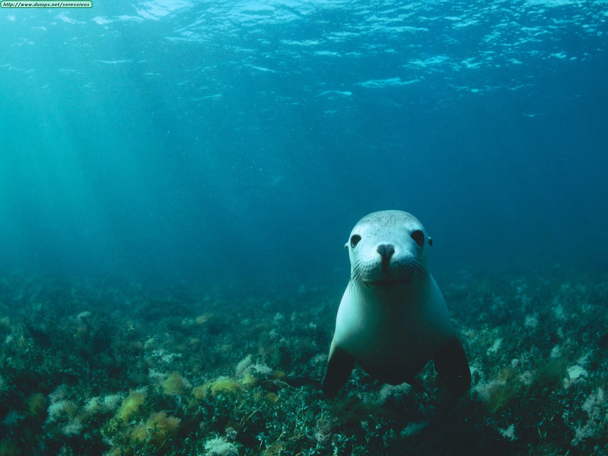
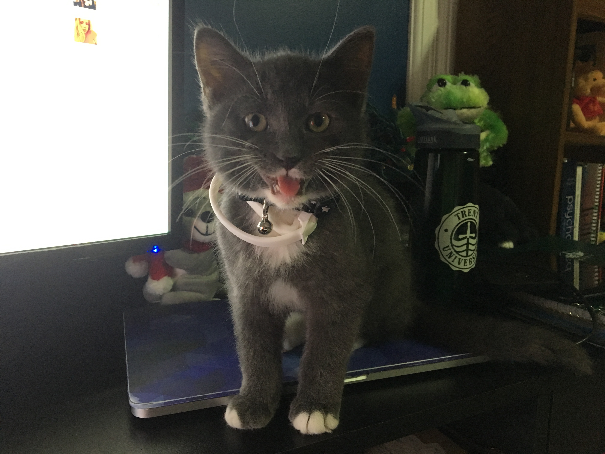
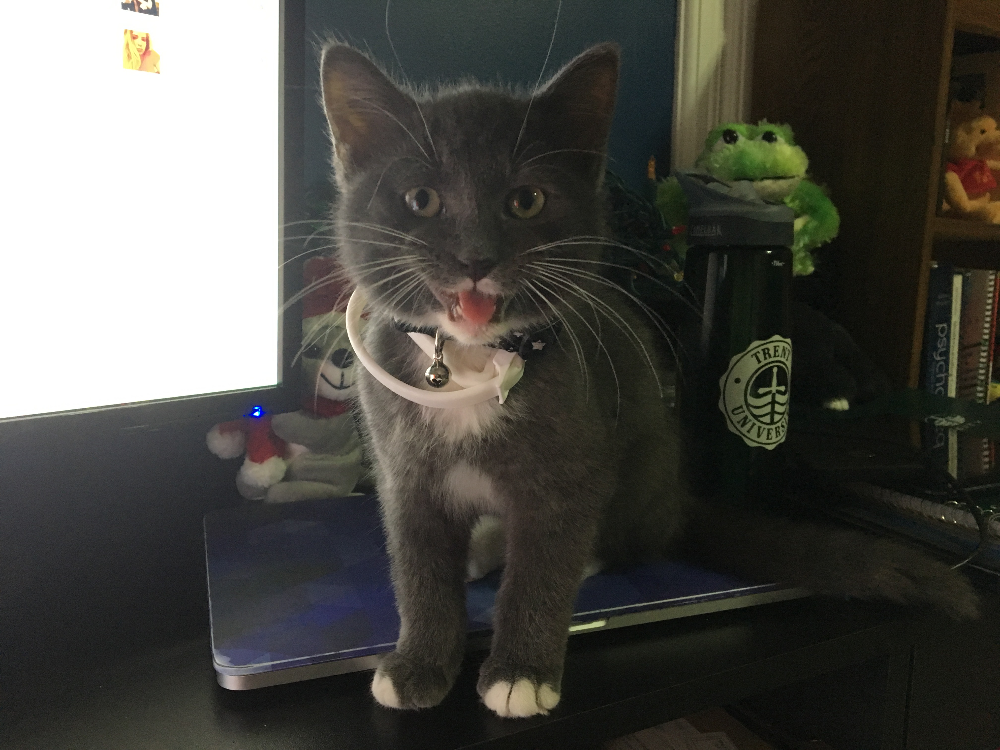

1.

I cut the racoon from the original photo, and pasted her in a stock photo I found on Google.
Then, I turned down the racoon's opacity to give her a bluer hue, so she looked more like she was under water.
 
2.
From 3 photos I took in November, trying to get a good photo of the sky.
I layered the three on top of each other and adjusted the opacity for each, trying to get the image of the person to come through enough.
3.

My ex-girlfriend recently tried to dye her hair blue, but it ended up green.
Unfortunately, it's just the tips.
I call her broccoli head and love making fun of her for it, so I decided to dye her whole head green.
I chose the colour, added a layer mask, and used black to remove all the green from the unwanted areas
4.

A meme my friends and I use from first year, I decided to try and turn it into a happier meme.
It just got scarier.
I used the cage effect just to pull up the sides of her mouth, then went around the area of her entire mouth to hopefully try and make it a little more fluid.
It didn't work.
5.

Instead of a head swap, I just took a head from a different photo using the lasso tool.
I pasted it on my friend's to make it seem like there was a Limbo (cat) and a Big Limbo.
 
6.

Our Don last year got a little bit annoyed at us always taking photos of him (sorry Auzzy), so I decided to edit him out of this one.
I just copied and pasted parts of the background onto him until he was gone, using the lasso tool.

7.

Preface: I tried my best to lighten it, it didn't work...
So for my black and white photo, I decided I just wanted to colour her dress and eyes because they're the best parts of the photo.
I used the same method as I did for the Broccoli Head photo (3), which was probably the issue.
The masks make the photos darker, but I couldn't figure out how to do it without it.

8.

Took a photo of my friends from St Patrick's Day and made it seem a little older than just 2017 using overlays and gradients.

9.

Screenshots of a video from my friend talking to her parents about racism.
She took a sip of her wine when she won the argument.
Used the same methods as from number 2, layering and adjusting opacity.